A lo largo del año, consolidamos avances que reflejan la solidez de nuestro desempeño, la confianza de nuestros grupos de interés y la consistencia de una gestión orientada a la generación de valor económico, social y ambiental.
| Banco del Año en Ecuador Fuimos reconocidos como Banco del Año en Ecuador por The Banker, revista del grupo Financial Times. Esta distinción reconoce nuestros sólidos resultados financieros, nuestra capacidad de innovación y el aporte al desarrollo económico del país, y consolida nuestro posicionamiento como referente del sistema financiero ecuatoriano, sustentado en la excelencia operativa, la visión estratégica y el enfoque en el cliente. |
|---|
| Marcas Más Influyentes del Ecuador Nos ubicamos entre las Marcas Más Influyentes del Ecuador, al alcanzar el top 3 del sector financiero según Ipsos y América Economía. Este reconocimiento refleja nuestra cercanía con las personas, la relevancia de nuestra propuesta de valor y nuestra capacidad de generar conexiones significativas. |
| Reputación corporativa Ingresamos al top 10 de las empresas con mejor reputación corporativa del Ecuador en el ranking Merco, un reconocimiento que evidencia la coherencia entre nuestra estrategia, nuestra cultura organizacional y el impacto de nuestra gestión. |
Experiencia que transforma la banca
| Experiencia del cliente en banca Recibimos el Sello BCX 2024 como la marca #1 en experiencia del cliente en banca, un reconocimiento que destaca nuestro enfoque en ofrecer experiencias cada vez más cercanas, simples y memorables. |
|---|
| Servicio y experiencia del cliente Fuimos reconocidos como la institución financiera #1 en experiencia y servicio al cliente por CES Ecuador, Advance Consultora y Market Watch, como resultado de una gestión centrada en el cliente y en la mejora continua del servicio. |
| Excelencia en marketing Alcanzamos el reconocimiento como Mejor Equipo de Marketing del Ecuador en los Lux Awards, destacando nuestra capacidad para integrar estrategia, creatividad y resultados de negocio. |
Compromiso con la sociedad y con el planeta
| Distintivo Empresa Socialmente Responsable Obtuvimos el reconocimiento como Empresa Socialmente Responsable, que avala una gestión ética, sostenible y orientada a la generación de valor para nuestros grupos de interés. |
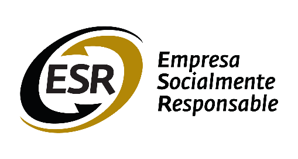 |
|---|---|
| Reconocimiento ODS Leaders Summit Recibimos un reconocimiento en el ODS Leaders Summit, que destaca nuestro compromiso con la sostenibilidad y nuestra contribución al cumplimiento de los Objetivos de Desarrollo Sostenible (ODS) mediante iniciativas con impacto tangible. |
|
| Certificaciones de proyectos alineados a los ODS Obtuvimos certificaciones por proyectos alineados a los Objetivos de Desarrollo Sostenible (ODS), entre ellos nuestro programa Yo Cuido, vinculado a la acción por el clima, y nuestro modelo de gestión Empresa Familiarmente Responsable (EFR), orientado a promover la conciliación entre la vida laboral, personal y familiar de nuestros colaboradores. |
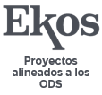 |
Verificación anual de Huella de Carbono Mantuvimos la verificación de nuestra huella de carbono conforme a la norma ISO 14064-1, a través de un organismo acreditado, fortaleciendo nuestra gestión climática y el enfoque de mejora continua. |
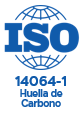 |
| Certificación EDGE para Edificaciones Sostenibles Obtuvimos la certificación preliminar EDGE para nuestro edificio Sucursal Cuenca, certificada por GBCI, con ahorros del 24 % en energía, 39 % en agua y 63 % en carbono incorporado en materiales, reflejando nuestro compromiso con la construcción sostenible. | 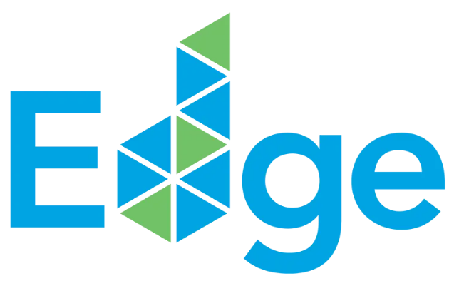 |
Gestión del Talento y Cultura Organizacional
| Certificación SIGOS Obtuvimos la certificación del Sistema de Gestión de Organización Saludable (SIGOS), emitida por AENOR España, que respalda nuestro enfoque en el bienestar integral de los colaboradores. |
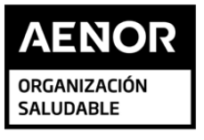 |
|---|---|
Empresa Familiarmente Responsable (EFR) Obtuvimos el reconocimiento Empresa Familiarmente Responsable (EFR), otorgado por la Fundación Másfamilia, que evidencia nuestro compromiso con el bienestar de los colaboradores, la conciliación entre la vida personal y laboral, y el fortalecimiento de una cultura organizacional centrada en las personas. |
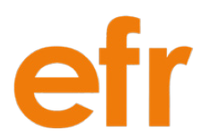 |
| Actívate y Vive Recibimos el reconocimiento Actívate y Vive del Ministerio de Salud Pública, que certifica la implementación de entornos laborales saludables. |
|
| El Talento No Tiene Género Fuimos distinguidos con el reconocimiento El Talento No Tiene Género, otorgado por Women for Women Ecuador, como reflejo de nuestro compromiso con la equidad, la inclusión y la promoción del talento. |
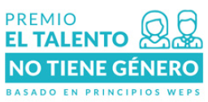 |
| Great Place to Work Alcanzamos el tercer lugar entre los mejores lugares para trabajar en Ecuador, un reconocimiento que refleja una cultura organizacional sólida, cercana y centrada en las personas. |
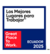 |
| Employers for Youth (EFY) Logramos el primer lugar del ranking Employers for Youth (EFY) en Ecuador, que destaca nuestra capacidad para atraer, desarrollar y potenciar el talento joven. |
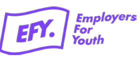 |
| Best Internship Experiences Alcanzamos el segundo lugar en Best Internship Experiences, como reflejo de nuestro compromiso con el desarrollo, el aprendizaje y la experiencia de los jóvenes talentos. |
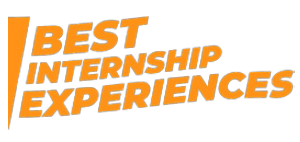 |
| Talento y cultura Alcanzamos el puesto #4 en Merco Talento, un reconocimiento que reafirma la solidez de nuestra cultura organizacional y el valor que generamos al impulsar el desarrollo, bienestar y crecimiento de nuestros colaboradores. |
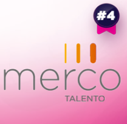 |
Integridad y Cumplimiento
Sistema de Gestión de Compliance (ISO 37301) Mantuvimos la certificación ISO 37301:2021, otorgada por AENOR España, consolidándonos como el primer banco privado del Ecuador en adoptar voluntariamente un Sistema de Gestión de Compliance. |
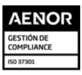 |
|---|---|
Sistema de Gestión Antisoborno (ISO 37001) — Segunda recertificación Logramos la recertificación de nuestro Sistema de Gestión Antisoborno ISO 37001 hasta 2028, ampliando su alcance a los productos de cuentas de ahorro y corrientes. |
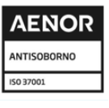 |
Evaluación de Madurez de Sistemas de Gestión Nos sometimos voluntariamente a una evaluación de madurez de los sistemas SGCo, SGAS y PARLAFD, realizada por la firma auditora Ernst & Young (EY), obteniendo resultados excelentes y avances significativos en gestión de riesgos, cumplimiento normativo y seguridad operacional. |
Seguridad que protege lo más importante
| Sistema de Gestión de Seguridad de la Información Mantuvimos la certificación ISO 27001:2022, fortaleciendo la solidez y mejora continua de nuestro Sistema de Gestión de Seguridad de la Información y Ciberseguridad. |
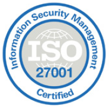 |
|---|---|
| Seguridad de datos de tarjetahabientes Mantuvimos la certificación PCI DSS 4.0.1, que respalda la protección de los datos de tarjetahabientes de Visa, American Express y Mastercard. |
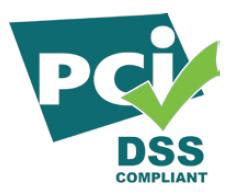 |
| Seguridad del PIN en cajeros automáticos Mantuvimos la certificación PCI PIN 3.1, que respalda la protección del PIN en cajeros automáticos y refuerza nuestro enfoque en la seguridad de la información y la mejora continua. |
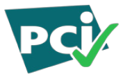 |
Continuidad como pilar de confianza
| Sistema de Gestión de Continuidad del Negocio Mantuvimos la certificación ISO 22301, consolidando la solidez y mejora continua de nuestro Sistema de Gestión de Continuidad del Negocio. Este logro ratifica nuestro compromiso con la resiliencia operativa, la disponibilidad continua de los servicios y la protección de nuestros clientes, incluso frente a escenarios de emergencia y crisis. |
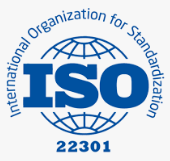 |
|---|